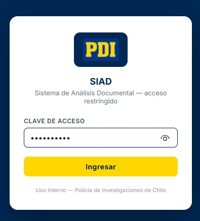
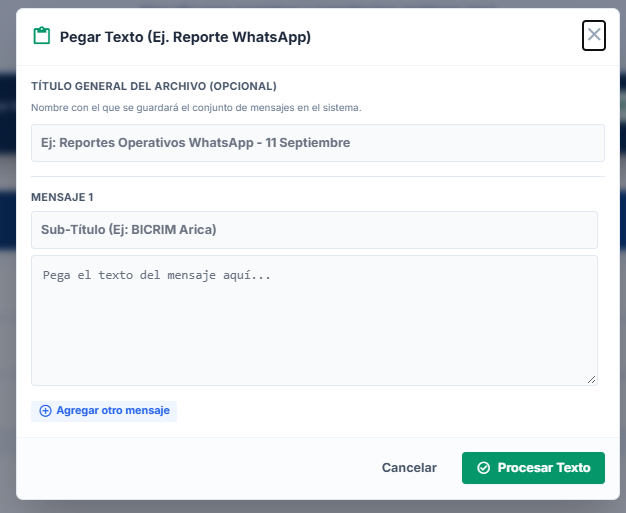
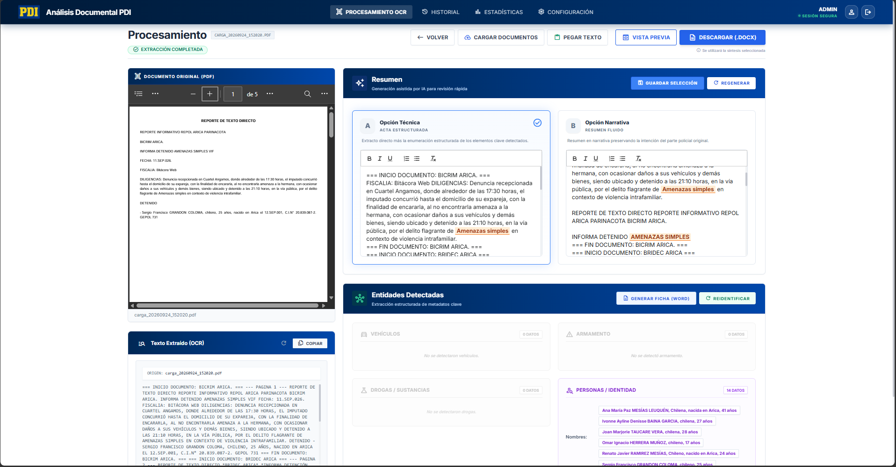
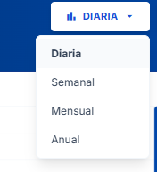
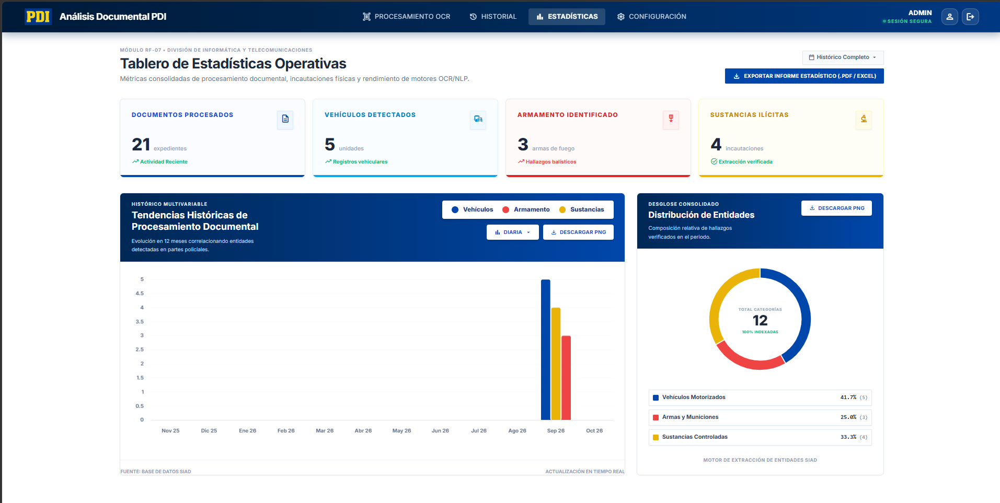

Sistema de Análisis Documental
(SIAD)
Avances y Mejoras
Control de Acceso (Login)
Acceso Restringido
Sistema protegido mediante credenciales institucionales, garantizando que solo personal autorizado ingrese.
Trazabilidad
Cada documento procesado y acta generada queda vinculada al perfil del usuario que realizó la acción.

Carga Fluida de Documentos


Arrastrar y Soltar
Nueva zona interactiva (dropzone) intuitiva con validación instantánea.
Pegado de Texto Directo
Ingreso rápido copiando y pegando reportes informales (Ej. WhatsApp).
Protección de Archivos
Rechaza automáticamente archivos corruptos o ilegibles antes del proceso.
Área de Trabajo y Extracción
Nueva Disposición y Módulos
- Visor Paralelo: Documento original y herramientas lado a lado.
- Resumen Dual: Opciones de resumen técnico (estructurado) y narrativo (fluido).
- Identidad / Personas: Nuevo panel de extracción de sujetos (nombres, RUT, edades).
- Acciones Unificadas: Barra superior optimizada (Limpiar, Descargar DOCX).

Generación de Documentos y Vista Previa
Vista Previa Exacta
Nuevo modal interactivo para visualizar el acta Word final tal como se descargará, antes de generarla.
Privacidad en Actas
Eliminación automática de información sensible (RUT, teléfono, dirección) en el apartado de detenidos.
Reportes de WhatsApp
Soporte integrado para cargar múltiples reportes de WhatsApp de manera individual y agregarlos al acta.

Módulo de Estadísticas
Dashboard Interactivo
Tablero con KPIs, gráficos de dona y línea de tiempo (Chart.js). Incluye filtros dinámicos temporales.

Exportación a Excel
Reportes históricos RF-07 ahora en formato .xlsx con múltiples hojas.
Top 5 y Rendimiento
Consultas en tiempo real para marcas de vehículos y sustancias más frecuentes.

Mejoras de Flujo y Seguridad
Bloqueo por Inactividad
Cierre de sesión automático tras 15 minutos sin interacción para prevenir accesos no autorizados en terminales.
Protección Anti-Duplicados
Validación automática que rechaza archivos previamente cargados para mantener la integridad de la base de datos.
Intervención y Ajuste Humano
Los extractos generados por IA son campos 100% editables. El analista puede corregir el texto antes de inyectarlo en el Word.
Beneficios Clave del SIAD
Optimización de Tiempo
Automatiza el análisis de lectura y reduce de horas a segundos la extracción de información crítica.
Estandarización Segura
Genera actas con un formato unificado y anonimiza automáticamente los datos sensibles.
Procesamiento 100% Local
Infraestructura totalmente local. Los datos nunca salen de la red, garantizando total soberanía.